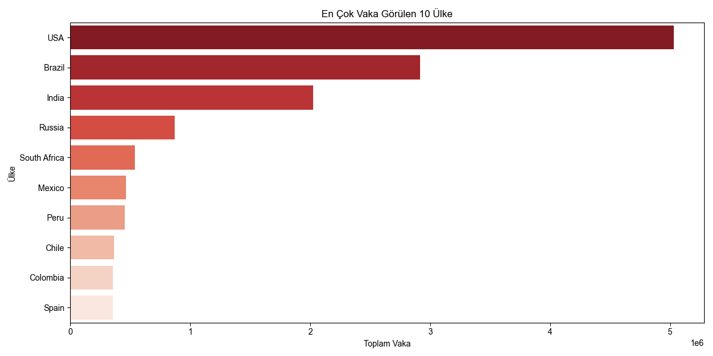
En Çok Vaka Görülen 10 Ülke
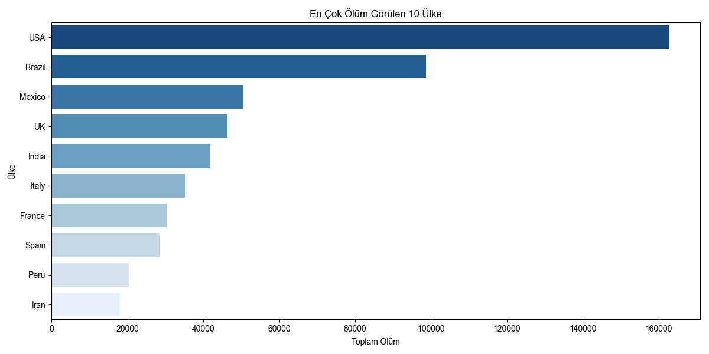
En Çok Ölüm Görülen 10 Ülke
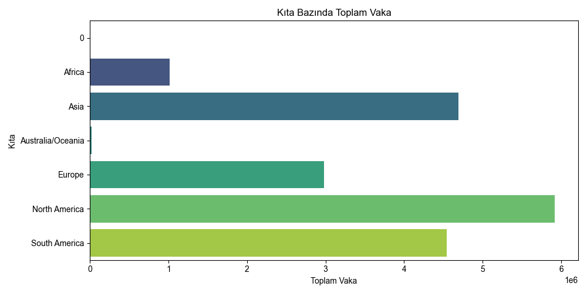
Kıta Bazında Toplam Vaka
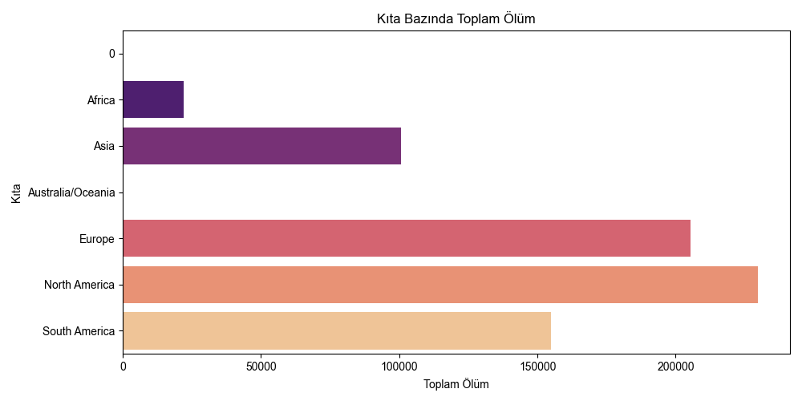
Kıta Bazında Toplam Ölüm
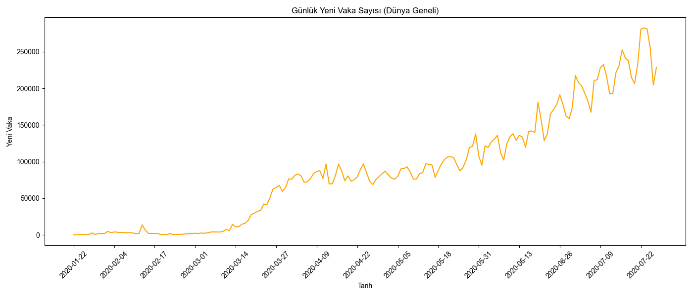
Günlük Yeni Vaka Sayısı
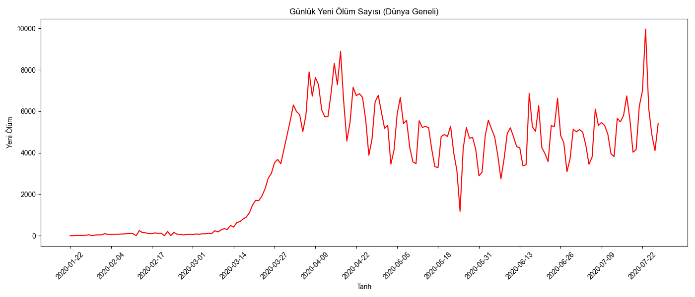
Günlük Yeni Ölüm Sayısı
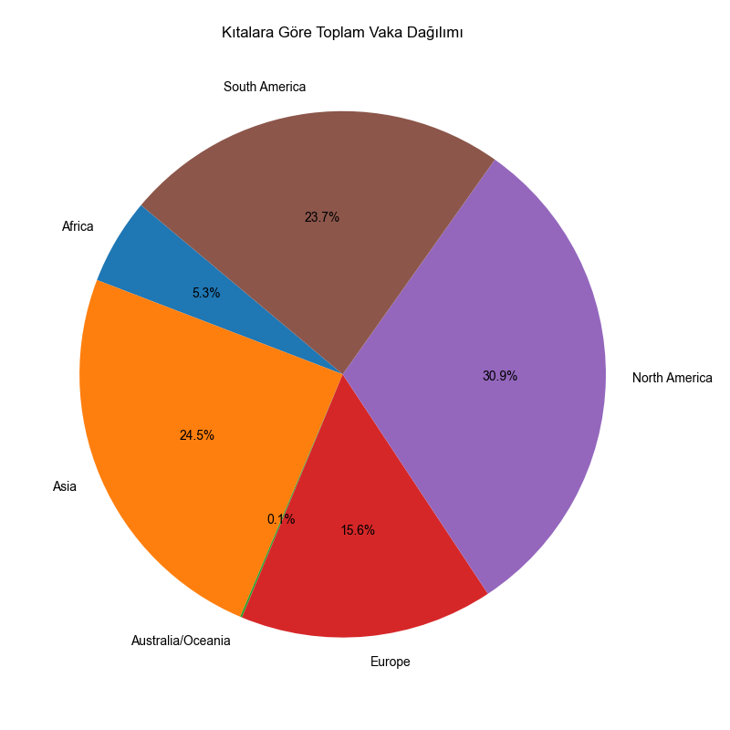
Kıtalara Göre Toplam Vaka Dağılımı
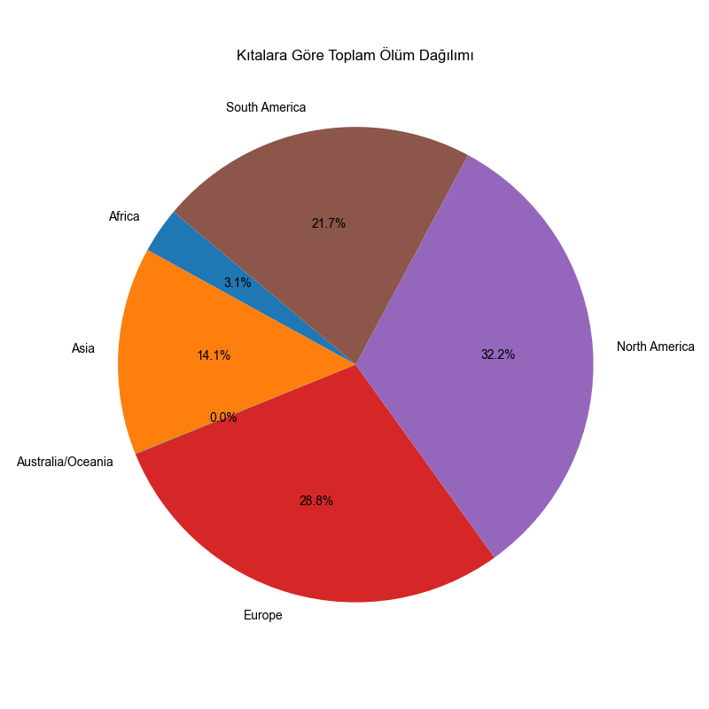
Kıtalara Göre Toplam Ölüm Dağılımı
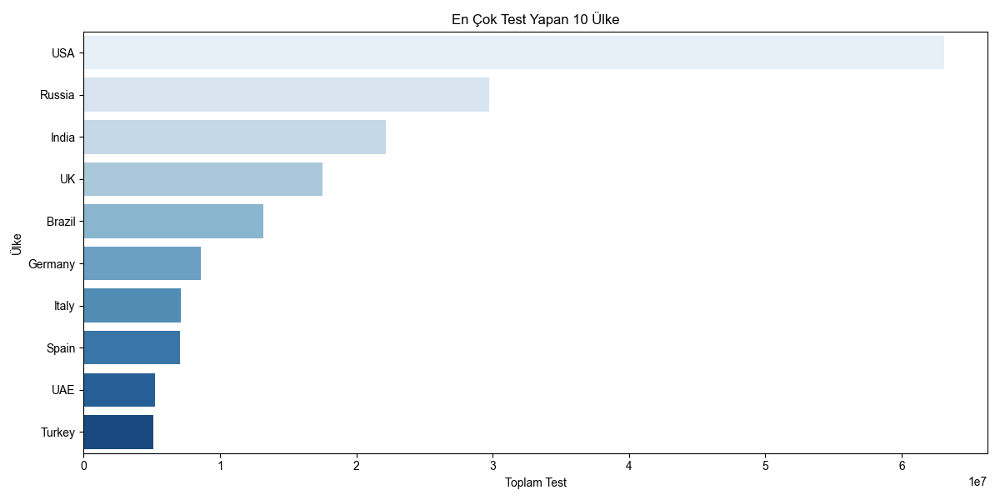
En Çok Test Yapan 10 Ülke
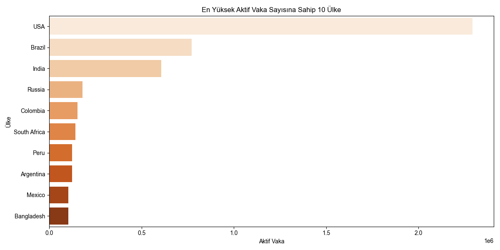
En Yüksek Aktif Vaka Sayısına Sahip 10 Ülke
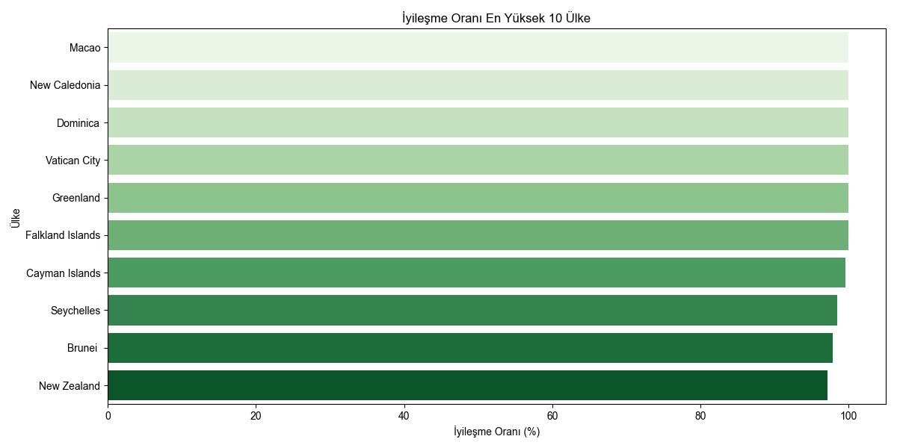
İyileşme Oranı En Yüksek 10 Ülke
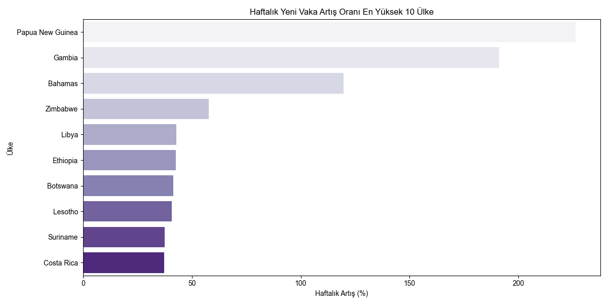
Haftalık Yeni Vaka Artış Oranı En Yüksek 10 Ülke
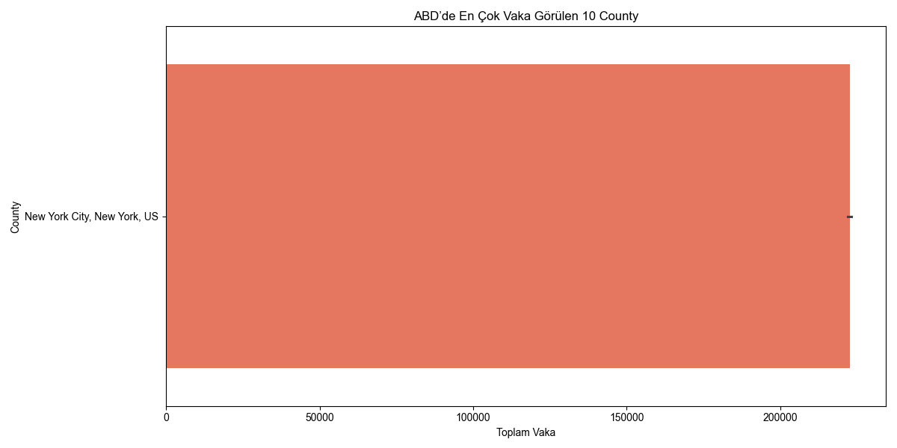
ABD’de En Çok Vaka Görülen 10 County
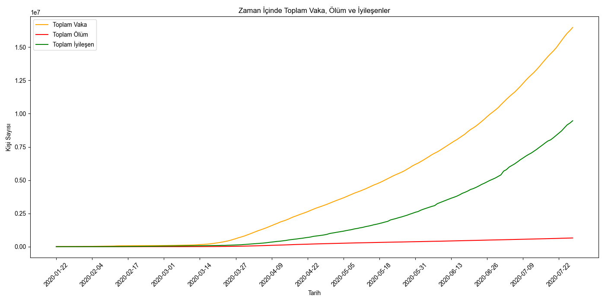
Zaman İçinde Toplam Vaka, Ölüm ve İyileşenler
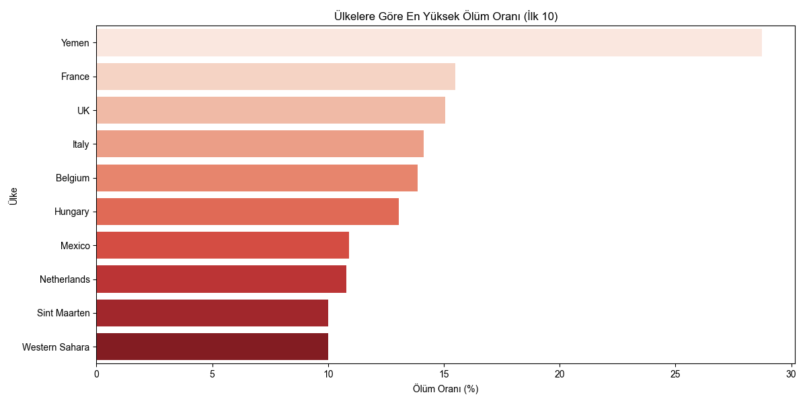
Ölüm Oranı En Yüksek 10 Ülke